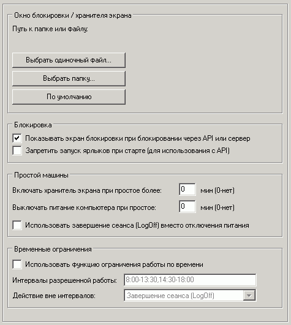

Наиболее важные опции на этой вкладке:
Окно блокировки / хранителя экрана
Можно установить для отображения как одиночный файл (видео, flash-ролик или картинку), так и папку с картинками (режим slide-show).
Показывать экран блокировки
Если опция отключена, то при блокировании ярлыков через API или сервер окно блокировки показываться не будет, однако запуск ярлыков будет запрещен.
Запретить запуск ярлыков при старте (для использования с API)
Если Ваше приложение использует API шелла для запрета/разрешения запуска ярлыков, то эта опция может быть весьма полезна - ярлыки нельзя будет запустить пока Ваше приложение не разрешит это сделать.
Для более подробной информации смотрите документацию по API шелла.
Временные ограничения
Вы можете ограничить работу на машине вне заданных вами временных интервалов. При этом вне этих интервалов будет выполняться выбранное вами действие. Пользователю будет выдано соотв. предупреждение, чтобы он успел закрыть свои активные задачи перед тем, как будет выполнено действие (выключение машины или завершение сеанса).
Сами временные интервалы разрешенной работы задаются через запятую или точку с запятой в форматах: "чч:мм", "чч:м", "ч:мм", "ч:м", или "ч".
Допустимые значения для минут: 0-59, для часов: 0-23.
Допускается переход через 0:00, т.е. начало интервала может быть больше конца в абсолютном значении.
Пустая строка означает, что разрешенных интервалов нет и работа будет невозможна вообще.
Интервал 0:00-23:59 означает, что работа разрешена всегда.